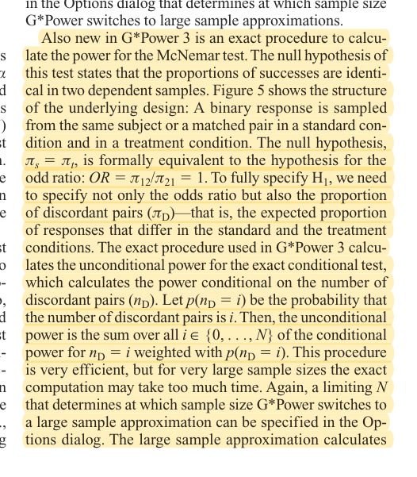
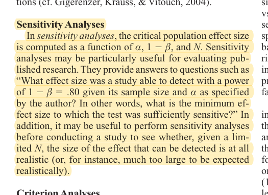

R25 · Evaluation and measurement
Paired power depends on discordant outcomes, not another study’s participant count
G*Power 3: A flexible statistical power analysis program for the social, behavioral, and biomedical sciences
Franz Faul, Edgar Erdfelder, Albert-Georg Lang, Axel Buchner · 2007
Behavior Research Methods 39(2):175–191; peer-reviewed methodological paper
What the study investigates
When two systems process the same input, their results are paired. Sample-size planning must describe how they disagree, rather than specify two marginal accuracy rates only. G*Power 3 introduces statistical tests and five forms of power analysis.
How it was studied
The authors explain a priori planning, achievable power, and sensitivity analysis under fixed resources. Physical PDF page 13, journal page 187, describes McNemar's paired binary design: each object has one binary result in each condition. Power depends on discordant pairs and the ratio of the two discordant probabilities. Exact computation enumerates the possible number of discordant pairs and weights conditional power by its probability.
Findings
The paper provides a computation method and tool, not an OSCE validation or a universal minimum number of scenarios. It enables a transparent account of the assumed net improvement and discordance under which a planned sample can detect a difference.
Limits of the evidence
Repeated runs or several items from one dialogue are not automatically independent pairs. Post-hoc power based on the observed effect does not establish reliability. Exact tests can be conservative; the analysis should be fixed before inspecting significance.
How it informs DualGraph-OSCE
The current plan is 120 paired frozen turns across four stations, with one target role response and one target assessment decision per turn. A prior planning example assumes B-only success of 20% and A-only success of 5%; that is a design assumption, not an observed improvement. Valid power also requires identifying shared dialogue and script-family dependencies. Secondary repeats and controlled variants do not increase the independent sample size. Confirm the assumptions and analysis before treating the plan as adequate.
Where to cite it
Evaluation: paired test and sample-size rationale. This is not evidence of algorithmic novelty or educational benefit.
Possible manuscript wording
The paired technical comparison uses a prespecified exact McNemar analysis, with power evaluated under stated discordance assumptions and sensitivity to smaller differences. Related inputs are not counted as independent observations.
[R25·1]This is a manuscript-specific paraphrase, not a quotation from the source. The excerpts below define what the citation supports. The proposed method and its expected benefits are not findings of the cited paper.
Source passages and precise locations
Page numbers refer to physical pages in the saved original PDF, including any repository cover sheets. Compilation page numbers are listed separately. Yellow highlighting marks the passage used for the argument.
R25-E1Paired binary outcomes and exact McNemar power
Original PDF page 13. Highlight compilation page 389. The highlight identifies the passage used here; consult the full original page for its context.

R25-E2Sensitivity analysis under resource constraints
Original PDF page 3. Highlight compilation page 379. The highlight identifies the passage used here; consult the full original page for its context.
